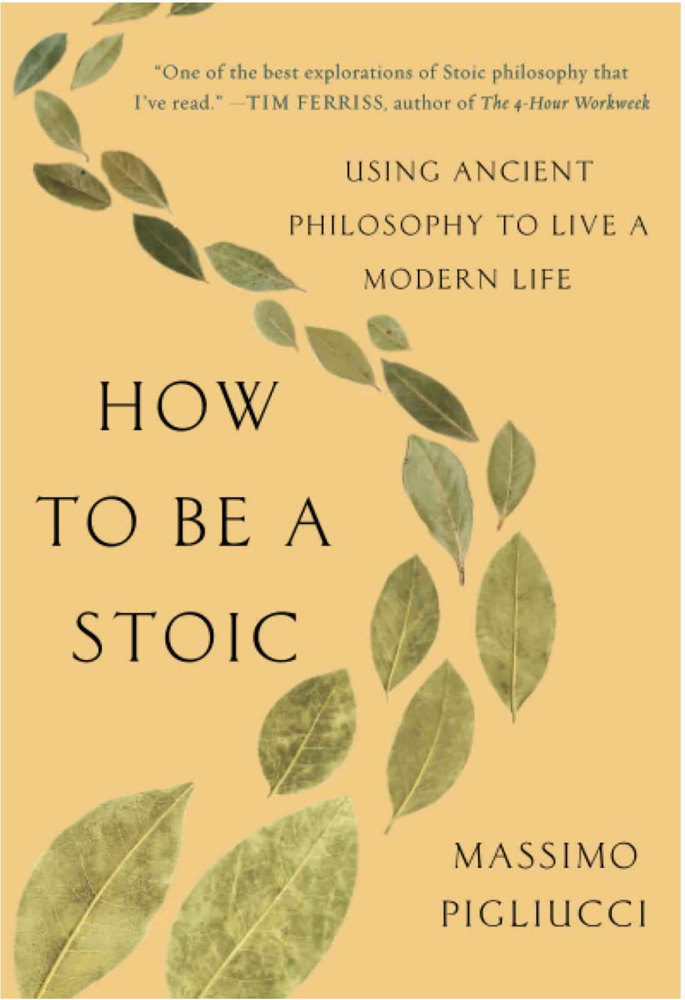
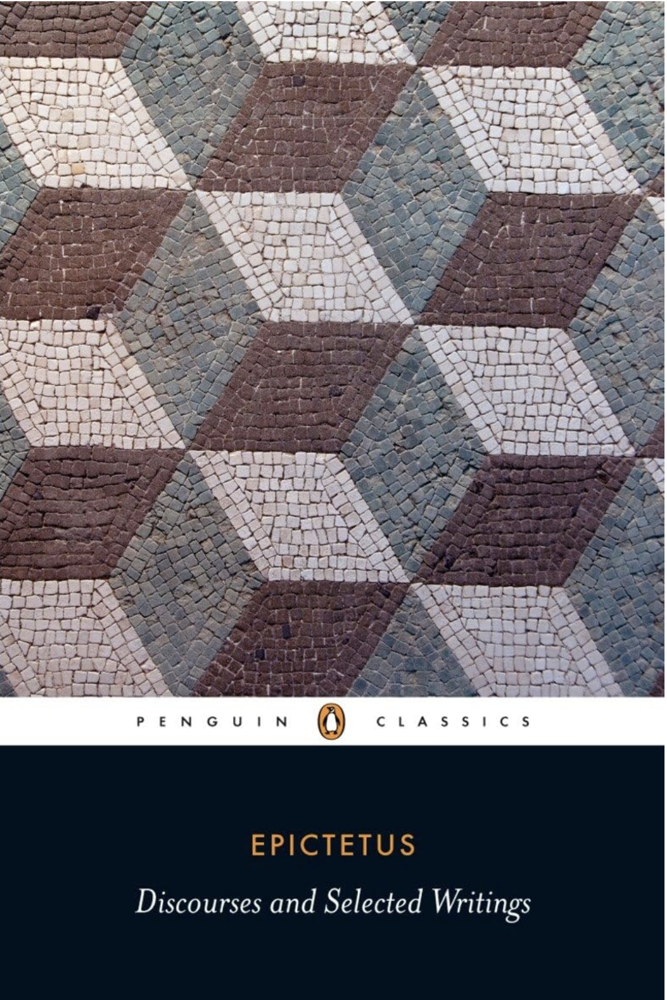

<!DOCTYPE html>
<html lang="en-US">
<head>

<!--

Title: Learn

Use: Use for starting every webpage, 

Author: Daniel Wilson

School/Term: 2024 Spring

Developed: 03/07/2024

Tested: 03/07/2024

-->
               <meta charset="utf-8">
               <title>The Stoic Road</title>
               <link rel="icon" type="image/png" href="/images/favicon.ico">
 <script src="https://kit.fontawesome.com/5bc691ef57.js" crossorigin="anonymous"></script> 
 
 <link href="nav.css" rel="stylesheet"> <link href="learn.css" rel="stylesheet"> <link href="style.css" rel="stylesheet">

</head>


<body>
  
  <header><h1>Learner Page</h1></header>


  <nav>
    <label for="toggle" id="mobile-nav"> &#9776; </label>
      <input type="checkbox" id="toggle"/>
    <ul id="main-nav">
      <li class="nav-item"><a class="nav-link" href="index.html">Home</a></li>
      <li class="nav-item"><a class="nav-link" href="about.html">About</a></li>
      <li class="nav-item"><a class="nav-link" href="#contact">Contact</a></li>
      <li class="nav-item"><a class="nav-link" href="resources.html">Resources</a></li>
      <li class="nav-item" id="learn"><a class="nav-link" href="learn.html">Learn</a>
      <ul id="learn-nav"><li class="nav-item"><a class="nav-link" href="learn.html#foundations">Foundations</a></li> <li class="nav-item"><a class="nav-link" href="learn.html#clarity">Clarity</a></li> <li class="nav-item"><a class="nav-link"  href="learn.html#living">Living</a></li></ul></li>
    </ul>
  </nav>
    
<main>
<section id="foundations">

  <h2>Grasp the Foundation</h2>



  <p>In this chapter, we lay the foundation of Stoic wisdom! In this chapter, we embark 
    on a journey into the world of Stoicism, an ancient philosophy that teaches us how to 
    lead a good life with wisdom and resilience. Meet the wise thinkers like Zeno, Seneca, 
    Epictetus, Socrates, and Marcus Aurelius, who shaped Stoicism's core ideas. Learn 
    about the Stoic view on virtues and the importance of living in harmony with nature. Get 
    ready to discover practical insights that can transform the way you navigate life's ups 
    and downs, bringing a sense of peace and purpose to your everyday experiences.</p>


</section>

<section id="clarity">

<h2>Cultivate Moral Clarity</h2>


<p>Now that we've laid the groundwork, let's explore the heart of Stoicism – ethics 
  and virtue. In this chapter, we dive into the values that form the bedrock of a Stoic life. 
  Learn about virtues like wisdom, courage, justice, and temperance that guide Stoics in 
  making good choices. Discover how cultivating these virtues leads to a life of purpose 
  and moral clarity. Through simple examples and practical insights, you'll see how 
  embracing Stoic ethics can positively change your actions and mindset, steering you
  towards a path of virtuous living. Get ready to unlock the power of Stoic principles in 
  shaping a meaningful life</p>

</section>


<section id="living">

<h2>Bridge Ancient Wisdom with Contemporary Living</h2>



<p>In this concluding chapter, we bridge ancient wisdom with modern living. Explore 
  how Stoicism, with its timeless principles, remains a guiding light in today's fast-paced 
  world. Learn how to adapt Stoic philosophy to tackle contemporary challenges, manage 
  stress, and find tranquility amid the hustle of the 21st century. Discover practical ways to 
  integrate Stoicism into your daily routine, making it a powerful ally in your pursuit of wellbeing and purpose. As we navigate the intersection of ancient wisdom and modern life, 
  you'll uncover the enduring relevance of Stoicism in fostering resilience, clarity, and a 
  sense of fulfillment in the present moment</p>

</section>


</main>


    
  <footer><p>Daniel Wilson</p> <p><i class="fa-solid fa-phone"></i> 1-656-656-6565 </p><p><i class="fa-sharp fa-solid fa-envelope"></i> ddwkfd@umsystem.edu &copy 2024</p></footer>
</body>
</html>